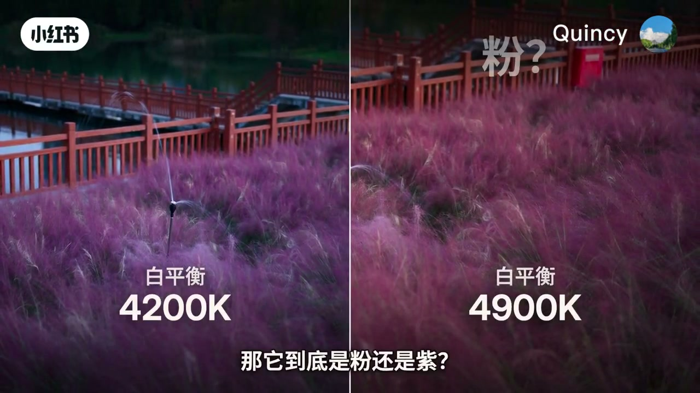
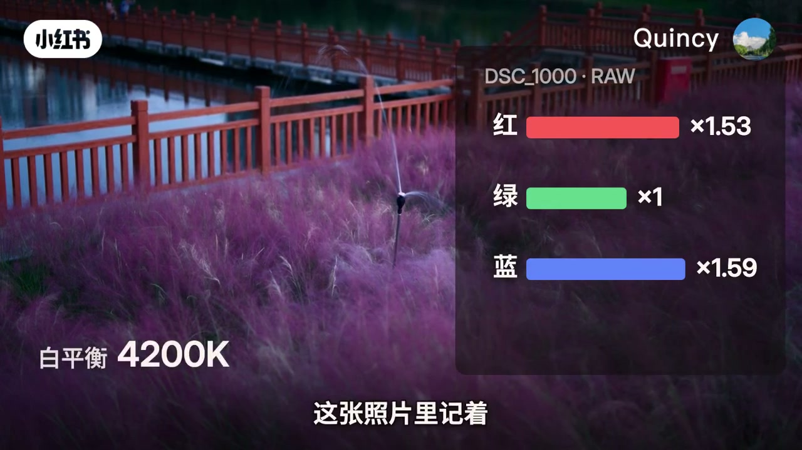
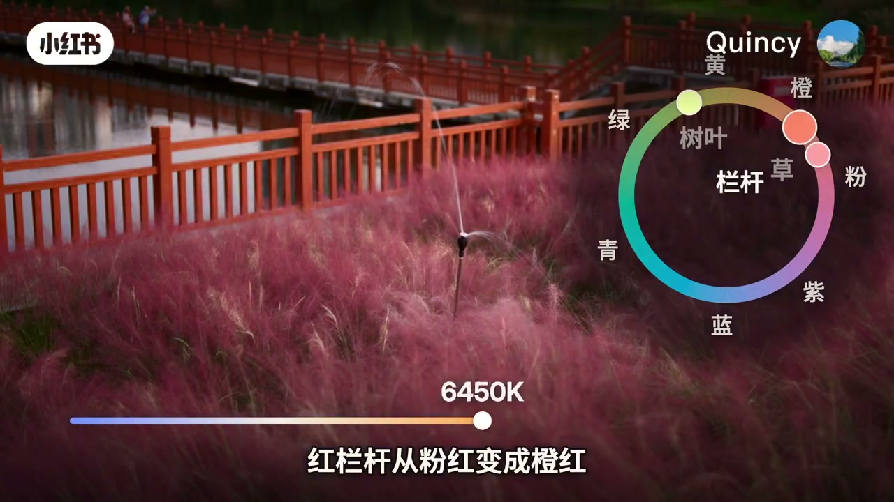
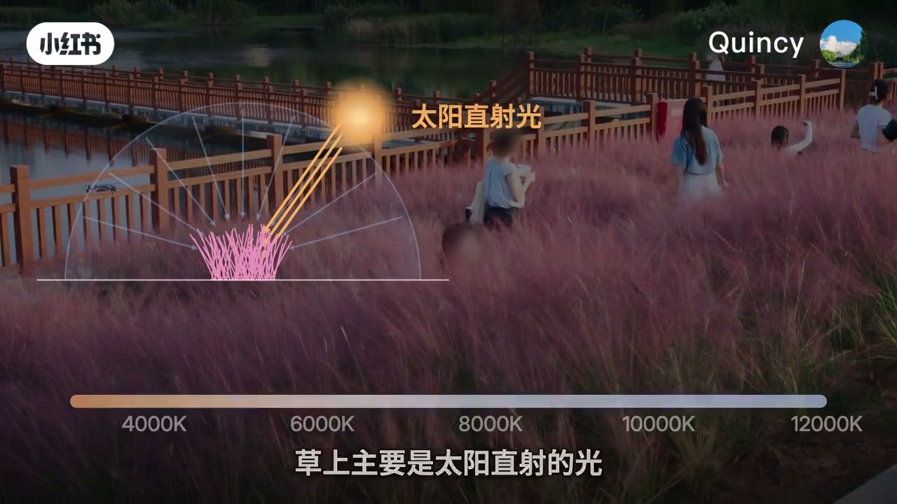
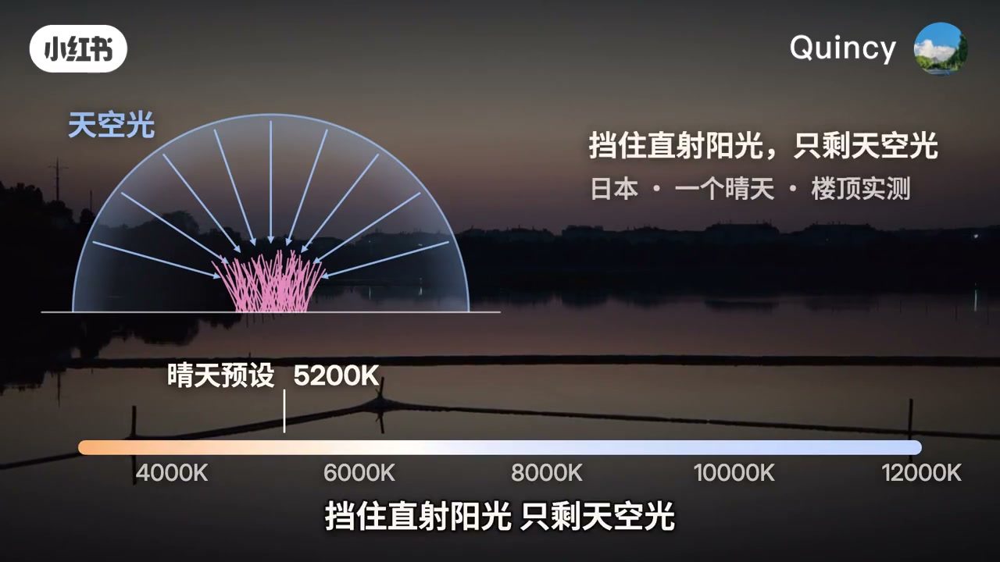
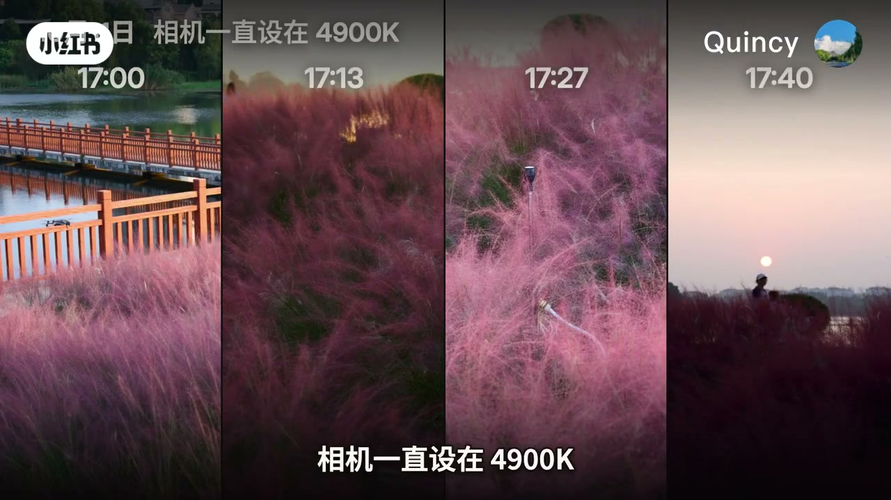
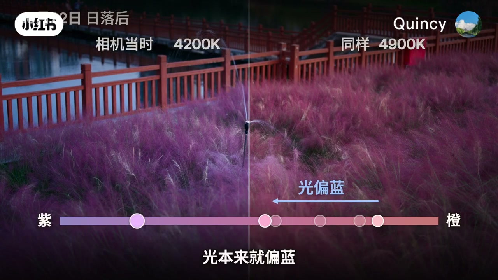
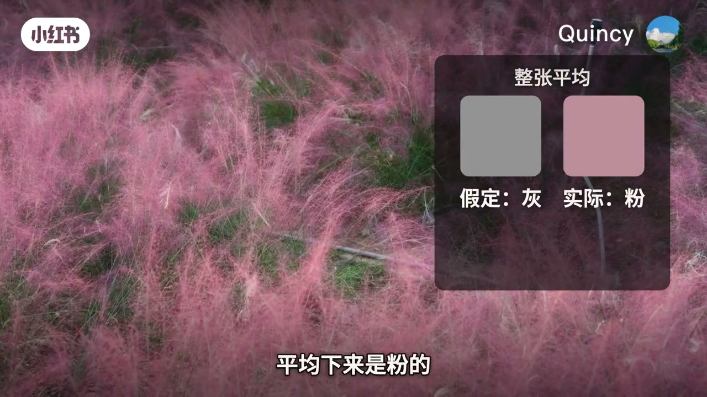

内容要点
全片一个说话人，没有对谈。下载元数据里的作者名是「科普观察室」，画面右上角署名 Quincy，片子没有说明二者是不是同一个人。开场字幕写「这是去年十月拍的一片粉黛草」，没有写年份和具体湖名。00:05 到 01:00、01:55 到 02:25 两段口播几乎是空的，论证主要在图上：色温数字、通道乘数和对比画面。
知识结构
同一张 DSC_1000 的 RAW，4200K 和 4900K 并排。口播把白平衡说成红、蓝各乘一个数。4200K 这一帧上红乘 1.53、蓝乘 1.59。草本身红最多、蓝其次，蓝一压过红，粉就叫成紫。
同一张照片一路拨色温：草从紫到粉，再到带点橙的粉；树叶从发青到发黄；红栏杆从粉红到橙红。色环上粉和紫挨着，色温拨到 6450K 时字幕正在说栏杆变橙红。
太阳还高时，草上主要是直射光，这台相机的晴天预设大约 5200K。太阳落下后只剩天空光。画面引用日本晴天楼顶的实测，并写挡住直射阳光后色温整天不低于 8500K。这个数来自字幕，口播没有把它念出来，也没有给出人名。
人站在草边很少觉得它紫成那样，因为周围一起偏蓝，眼睛会把光的颜色扣掉一部分。相机若设死一个数就不跟着变。自动白平衡只能从画面里猜；假定整张平均是灰，满屏粉黛草就会被扣成灰。想拍粉就把色温调高或在编辑里往暖拉，想要紫就往冷拉。
太阳底下、按晴天白平衡，作者的结论是粉。紫是傍晚的光加上当时的相机设定。草还是那片草，颜色由你选。8500K 和日本楼顶实测只是片中引用，没有文献可以在这条片子里核对。
00:00–01:12
同一张 RAW，4200K 和 4900K 并排
片头还是湖边那片草，木栏杆和水面在后面，字幕直接写「这是去年十月拍的一片粉黛草 紫的」。随后大约五十秒几乎没有人说话。画面先把同一张照片左右切开，再追问相机到底记下了什么。
00:16 这一帧已经把问题摊开：左边白平衡 4200K，右边 4900K，底栏问「那它到底是粉还是紫」。左边的草更冷、更紫，右边更暖、更粉。这是同一场景的两种解法，不是两天拍的两片草。

中间还插了一张白纸的示意。低清抽帧上能读到「纸的颜色？」「光的颜色？」，一边是「夕阳下」，一边是「阴影里」，底栏写「还是光的颜色」。准确截到 00:32 时，字幕已经换成「同一张白纸 夕阳下发橙」。这一小段的意思是：你看见的颜色里混着光，相机并不知道当时照着的是什么光。像素放大图上是红、绿、蓝三根柱，没有口播解释柱高。
口播从 01:00 左右才接上，把扣颜色的办法说直：
数字设得越低，红乘得越少，蓝乘得越多，照片就越蓝。
Whisper 把「乘」听成了「成」，正文按画面上的「红乘」「蓝乘」来写。00:48 的成片帧写着文件名 DSC_1000 RAW，白平衡 4200K，红乘 1.53，蓝乘 1.59。同一镜头的面板上绿通道是乘 1，低清帧能读出「绿 ×1」，这一张成片的文字识别漏掉了「绿」字，三行里只稳定读出红和蓝。

接着口播转到草本身的比例，而不是光的比例：
草的颜色里本来红最多，蓝其次，蓝一压过红，粉就成了紫。
4900K 的邻近帧把蓝降到 1.46，红升到 1.73，字幕是「蓝降到 1.46」，旁边标着「草的颜色」和「本来红最多 蓝其次」。这组数字只出现在画面上，口播没有逐个念乘数。
01:12–01:37
色温从 3500K 拨到 6500K，粉和紫挨着
口播宣布把这张照片的白平衡从 3500K 一路拨到 6500K。滑杆经过大约 3990K、4240K，后来停在能读清的 6450K。草的变化被说成三段：
草从紫变成粉，再变成带点橙的粉。树叶从发青变成发黄，红栏杆从粉红变成橙红。
转录把「红栏杆」听成了含糊的近音，正文以这一帧字幕为准。01:28 的色环把三个取样点标在环上：树叶靠近黄绿，栏杆靠近橙，草靠近粉。环外还写着黄、橙、粉、紫、蓝、青、绿。底栏字幕就是「红栏杆从粉红变成橙红」，滑杆数字是 6450K，手柄偏在暖的一侧。

同一段稍后把结论说死：整张照片的颜色都跟着变，粉和紫本来就挨着，差一点，名字就换了。这是作者的判断，依据是这次拨色温时草的外观，不是对粉黛乱子草品种的植物学鉴定。
01:37–02:25
晴天大约 5200K，日落后天空光把色温推高
相机该设多少，口播说要看当时是什么光。太阳还高的时候，草上主要是太阳直射的光。01:44 的图就是这个句子：一束标成「太阳直射光」的线打在草上，底下一条色温轴从 4000K 标到 12000K，每 2000K 一格。字幕重复「草上主要是太阳直射的光」。紧接着的口播给出这台相机的数字：
这台相机给晴天的预设大约是 5200K。
转录末尾多出来的「耳闻」对不上任何字幕，正文不采用。5200K 写在稍后的天空光图上，标注为「晴天预设」。

太阳一落，直射光没了，草只剩天空照着，光里蓝的成分多了起来。这句话之后口播断了大约三十秒。断掉的半句是「日本有人在一个晴天的楼顶量过，挡着」。转录把「量」听成「梁」。02:00 的图把后半句补全了：左边半圆是天空光，箭头指向一丛草；右边写「挡住直射阳光，只剩天空光」，下面一行是「日本 · 一个晴天 · 楼顶实测」。轴上晴天预设仍指着 5200K。

同一段无口播图示里，邻近一帧还写着「色温一整天都没低于 8500K」，色温轴上有「≥ 8500K」。这是画面字幕，不是口播念出来的句子。片子没有给出测量者姓名、城市或文献，所以 8500K 只作为这条视频的引用，不能当成已经核对过的气象数据。
接下来四格把相机锁在 4900K：17:00、17:13、17:27、17:40。顶栏写「相机一直设在 4900K」。邻近帧的底栏是「越往后，草越往紫那边走」，紫在色条左端，橙在右端。这一页截到的是时间标题，那句「越往后」在前后帧上。

再往后是日落后的左右对比。画面左上角写「2日 日落后」，月份没有出现在这一帧，十位是否还有数字，文字识别只稳定读出「2日」。左边标「相机当时 4200K」，右边标「同样 4900K」。底栏是「光本来就偏蓝」，箭头写「光偏蓝」，色条从紫指向橙。口播恢复以后把这件事说成：天空照着，光蓝推了一把，两下叠在一起，就紫了。

02:25–03:28
眼睛会适应，固定白平衡和灰世界都不会
人站在草边上，很少觉得它紫成这样。原因被说成眼睛的适应：周围的东西一起偏蓝，看一会儿，眼睛就把光的颜色扣掉一部分。02:40 前后的画面用圆点标出水、栏杆和树，底栏是「周围的东西一起偏蓝」。这是作者对观看经验的解释，片子没有做视觉实验。
相机若「设了固定的数」，就不跟着光变。转录听成「射了固定的树」。画面上对应的句子是「4200K 固定」和「就不跟着光变」。自动白平衡会跟着变，可它只能从画面里猜。
老办法是假定整张画面平均下来是灰的。02:56 的面板标题就是「整张平均」，两块色并排：「假定：灰」和「实际：粉」。底栏写「平均下来是粉的」。口播的结论是：满屏都是粉黛草，平均下来是粉的，照这个办法扣一遍，草就褪成了灰。邻近帧把操作写成「把粉当成光的颜色，扣掉」。

所以粉黛草是粉还是紫，作者给了一个带条件的答案：太阳底下，按晴天的白平衡拍，它是粉的。这几张里的紫，是傍晚的光和相机的设定叠出来的。片尾有一帧把这两项写成加法：傍晚的光，加上相机设定 4200K。
想拍粉，就把色温调高，或者拍完在编辑里往暖拉。想要梦幻一点的紫，就往冷拉。
「编辑」在转录里被听成「边际」。往暖拉的滑杆上，有一帧出现过 5600K，旁边写着「想拍粉」。口播没有报 5600K，它只是往暖一侧的一个示意位置。最后一句回到片头那片草：草还是那片草，颜色你来挑。画面左右分成更冷的紫和更暖的粉，顶栏是「同一片草 / 颜色你来挑」。